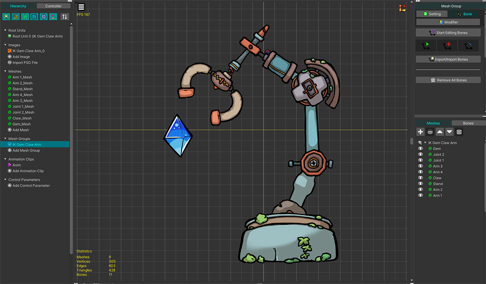

AnyPortrait > Manual > Improved IK method: FABRIK
Improved IK method: FABRIK
1.5.0
In AnyPortrait v1.5.0, the default algorithm for IK calculations has been changed from "CCD (Cyclic Coordinate Descent)" to "FABRIK (Foward And Backward Reaching Inverse Kinematics)".
The "FABRIK" method solves the movement problems shown in the "CCD" method in certain situations and has better performance.
However, in order to maintain the character animations created using the existing "CCD", an option is provided for users to select between "CCD" and "FABRIK".
- Existing characters will operate IK in "CCD" mode unless you change the options.
- Newly created characters will use "FABRIK" as the default.
This manual shows you how to set up the added "FABRIK" and how the changed algorithm differs.
For more detailed explanation of IK, please check the following manuals:
- IK Settings
- IK Controller
- Making IK work as intended
Set to FABRIK

A simple example using IK Controller is prepared as above.
The gem is connected to a bone, and the bone moves by keyframe animation.
The mechanical arm is made of several bones, and will move automatically to grab the gem only by the IK Controller without animation.

The rigging for the mechanical arm to move by bones has been completed.
Then, before setting up the IK Controller to move the mechanical arm, connect the main bones of the mechanical arm to the IK Chain.
(1) Select the "Bone" tab in the Mesh group.
(2) Select the bone ("Bone Arm 1") that is the beginning of the IK chain.
(3) Change the IK method to "IK Head".
(4) Click the "Change IK Target" button.
(5) Select the bone ("Bone Arm End") that is the end of the IK chain, that is, the bone that holds the gem.
(6) Now, you can see that the bones of the mechanical arm are connected as an IK chain.

Next, set up the IK Controller.
(1) Select the bone ("Bone Arm End") that will grab the gem.
(2) Change the type of the IK Controller to "Position", set "Effector Bone" to the bone ("Bone Gem") corresponding to the gem, and set Default FK/IK Weight to 1.
(3) Now, the IK chain from "Bone Arm 1" to "Bone Arm End" will automatically move towards the gem bone ("Bone Gem").

Let's change the IK method.
(If you create a new character after the v1.5.0 update, FABRIK will be set as the default.)
(1) Click the "Bake" button.
(2) Select the "Setting" tab.
(3) In the "IK Method" option, you can select "FABRIK" or "CCD".

You can also change the algorithm of the IK controller in the Setting Dialog.
(1) Open the "Setting Dialog".
(2) Select the "Portrait" tab.
(3) You can change the algorithm in the "IK Method" option.

If you create an animation by moving only the "Bone Gem", the arm will move as shown above by the IK Controller.

If you play the same animation in both "CCD" and "FABRIK" modes, you can see that it moves a little differently, as shown above.
Even though the gem's position is the same, you can see that the mechanical arm moves in a different way.
As IK does not have a clear answer, it shows different results depending on the algorithm.
Since "FABRIK" and "CCD" each have their own characteristics, it would be better to use the appropriate algorithm depending on the situation.
However, in AnyPortrait, the "FABRIK" method includes improved tuning, so it shows improved movement compared to the existing "CCD" method.
The two methods have the following differences due to the differences in the characteristics and tuning of the algorithm.
- In "CCD", the beginning of the IK chain moves a lot, while in "FABRIK", the end of the IK chain moves a lot.
- The IK error that occurs when the "Effector Bone" is close to the IK chain has been greatly improved in "FABRIK".
- In "CCD", the IK is tuned to refer to "the pose in the previous frame" to calculate, but in "FABRIK", the same result is produced in the same situation.
- In "CCD", "the pose in the previous frame" and "Prefer Angle" are combined and used as the starting pose for the IK calculation, while in "FABRIK", the user can decide the starting pose for the IK calculation between "FK" and "Prefer Angle". (Related Page)
- The execution performance has been slightly improved in "FABRIK".
You can also see the difference according to the IK method in the video below.
IK Algorithm of Editor Gizmo

Separately from the IK algorithm in IK Controller of character animation, you can change the IK algorithm used in "AnyPortrait editor" to CCD or FABRIK.
(1) Open the "Setting Dialog".
(2) Select the "Editor" tab.
(3) You can change the "Processor" option of "IK Method of Gizmo". As described above, you can choose between the "FABRIK" and "CCD (Legacy)" algorithms.

(4) When moving a bone with an IK chain set using the gizmo in the animation editing screen, different IK algorithms are used and calculated according to this option.